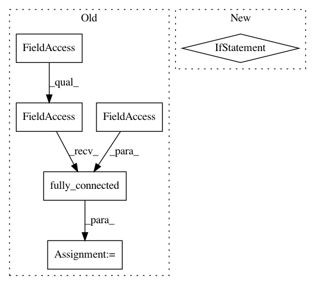

e9102d12d24e0809bf5e6d8fcd766488178c12f5,deepchem/models/tensorgraph/layers.py,Highway,create_tensor,#Highway#Any#Any#,632
Before Change
parent = inputs[0]
shape = parent.get_shape().as_list()[1]
// H(x), with same number of input and output channels
dense_H = tf.contrib.layers.fully_connected(
parent,
num_outputs=shape,
activation_fn=self.activation_fn,
biases_initializer=self.biases_initializer(),
weights_initializer=self.weights_initializer(),
trainable=True)
// T(x), with same number of input and output channels
dense_T = tf.contrib.layers.fully_connected(
parent,
num_outputs=shape,
After Change
def create_tensor(self, in_layers=None, set_tensors=True, **kwargs):
inputs = self._get_input_tensors(in_layers)
parent = inputs[0]
if tfe.in_eager_mode():
layers = self._layers
else:
layers = self._build_layers()
dense_H = layers[0](parent)
dense_T = layers[1](parent)
out_tensor = tf.multiply(dense_H, dense_T) + tf.multiply(
parent, 1 - dense_T)
In pattern: SUPERPATTERN
Frequency: 3
Non-data size: 6
Instances
Project Name: deepchem/deepchem
Commit Name: e9102d12d24e0809bf5e6d8fcd766488178c12f5
Time: 2018-03-22
Author: peastman@stanford.edu
File Name: deepchem/models/tensorgraph/layers.py
Class Name: Highway
Method Name: create_tensor
Project Name: deepchem/deepchem
Commit Name: f1df735684946dbbcefe41e41c7b1c3f2f751a07
Time: 2017-06-05
Author: peastman@stanford.edu
File Name: deepchem/models/tensorgraph/layers.py
Class Name: Dense
Method Name: create_tensor
Project Name: asyml/texar
Commit Name: e4d934bf3c19873071700043d7a4c262b4fb89b9
Time: 2017-12-03
Author: zichaoy@cs.cmu.edu
File Name: txtgen/modules/decoders/rnn_decoders.py
Class Name: BasicRNNDecoder
Method Name: step